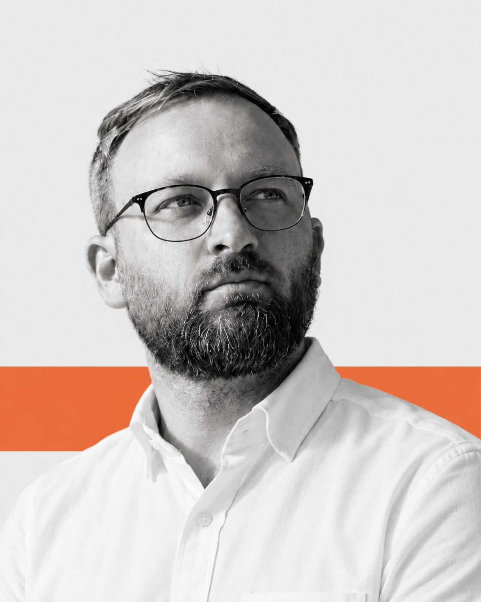

Leading launches from planning to go-live
Coordinating engineering, product, compliance, payments, QA and operations, alongside vendors and certification partners.

Technical Program & Delivery Manager
I lead complex software launches across engineering, product, compliance and operations. My background spans regulated markets, fintech and digital assets.
Coordinating engineering, product, compliance, payments, QA and operations, alongside vendors and certification partners.
Progressed from Project Manager to Senior Project Manager and Program Manager, working across fintech, digital assets and enterprise software.
“Stas values people and always finds a way to motivate and assist team members. His approach and great personality create a comfortable and productive environment for work!”
Open a company to see roles and selected impact.
Own end-to-end delivery of regulated-market launches from requirements and planning through certification, go-live and ongoing change, leading one Program Manager and four Project Managers across programmes of up to approximately 150 contributors.
Led Italy’s 12-month regulated platform certification and launch from zero to go-live across 10 backend teams, one frontend team and adjacent business functions.
Negotiated phased certification in parallel with final development, removing approximately two months from the critical path; later sourced and integrated a certified third-party solution within one week to protect another regulatory milestone.
Led a Mexico B2B launch with a local partner within six months and Greece regulatory changes typically delivered within three to four weeks.
FinTech · Digital assets · Enterprise software · SAFe
Owned delivery for the Securrency / DTCC Digital Assets account across five software teams, scaling the account from 8 to 50 people.
Owned account-level P&L, increased margin by 8% and renegotiated developer rates upward by 10%.
Created and scaled a Technical Business Analysis function that removed roughly one sprint from feature delivery — an approximate 30% cycle-time reduction.
Integrated a separately operating Data team into the wider programme within three months, reducing recurring integration and regression issues around releases.
Led the launch of a coworking space from concept and facility renovation through operational readiness.
Developed the go-to-market strategy, defined the service offering and established the core business operations.
Delivered a custom CRM platform from scratch, achieving 90% client satisfaction while keeping delivery delays below 5%.
Led a six-person cross-functional team through a nine-month development cycle and secured an extended support contract.
Introduced Scrum delivery, GitLab CI/CD and automated regression testing, reducing manual QA effort by 15%.
Contract management · Change management
Supported the launch of Eastern Europe’s largest DEKALB corn-seed facility, a €200M programme with annual capacity of 875,000 units.
Managed more than $1.2M in tenders through SAP Ariba, achieving 2–15% cost optimisation through structured bidding and vendor management.
Managed more than 50 suppliers across EECA and MEA, achieving 5–10% cost reductions on $500K in tenders.
Secured strategic partnerships for a cross-sales programme with an annual value of $800K.
Managed indirect procurement for brewery operations across more than 100 suppliers, achieving 5–10% cost optimisation on tenders up to $100K.
Standardised contract terms and moved suppliers from prepayment to 30-day post-payment conditions.
Managed procurement operations for manufacturing facilities, coordinating across departments to maintain timely delivery of production materials.
Introduced supplier-performance metrics to improve on-time delivery and quality compliance across the supply chain.
Regulated market launches from zero to go-live. Technical programmes spanning engineering, product, compliance, payments, sportsbook, casino, data, DevOps, QA and operations.
Platform, payments, sportsbook and third-party integrations. Coordination with vendors, certification partners and external stakeholders.
PM and delivery team leadership, VP / C-level stakeholder management, programme P&L, margin, utilisation and resource planning.
I use OpenAI Codex and Claude Code for requirements analysis, structured documentation, technical solution proposals and translating changing business and regulatory requirements into delivery items.
“I had a pleasure to work together with Stas on several critical and complex project connected with Ukraine.”
“I can characterize Stas as extremely motivated, result driven and client oriented procurement professional.”
“And I know him as responsible, initiative and professional employee with strong expertise in Procurement.”
Issued Aug 2023 · Expired Aug 2024
Issued Nov 2023
Master's degree · Business Management
Bachelor's degree · Business Management
ERT Responder